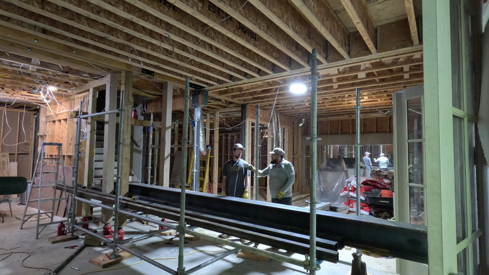
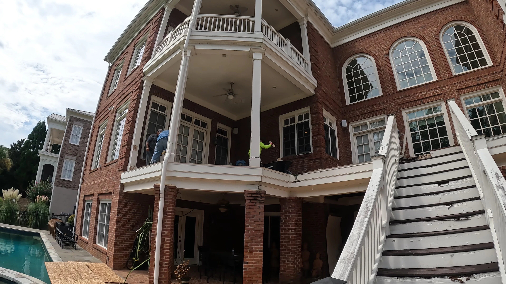

METRO ATLANTA STRUCTURAL REPAIR
Structural Jacking & Leveling
Sagging floors deserve more than a cosmetic fix. Start with the support beneath them.
Structures Inc. assesses structural movement and provides controlled jacking, leveling, and related support repairs for residential and commercial properties in Metro Atlanta.
WHAT THE SERVICE DOES
What is structural jacking and leveling?
Structural jacking uses controlled lifting to adjust the position of a building or part of its framing. Leveling addresses elevation differences where correction is appropriate.
The work begins with understanding why the structure moved. A low floor may involve compromised framing, deteriorated supports, settlement, or more than one condition.
Structures evaluates the affected areas and develops a project-specific approach. Lifting may be paired with reinforcement or support repair so the work addresses more than the visible slope.

LOOK BEYOND THE FINISHES
Sagging floors? Sticking doors? Find out why.
Floors that slope or dip
A noticeable low area or changing slope is a reason to investigate the floor system and its supports.
Openings that no longer fit
Doors and windows that begin sticking can accompany movement, although moisture and other conditions can also cause them.
Changes in framing or finishes
Visible sagging, new gaps, or recurring cracks may warrant an assessment, especially when several changes appear together.
These signs do not establish a diagnosis. Their location, history, and underlying conditions help determine whether jacking, leveling, or another repair is appropriate.
CHOOSE THE RIGHT REPAIR
Lifting is one part of the solution.
| Work involved | What it addresses | What to establish first |
|---|---|---|
| Structural jacking | Controlled changes in the elevation of affected structural elements. | Whether lifting is appropriate, how much correction is reasonable, and how the load will be supported. |
| Support repair or reinforcement | Compromised framing or support conditions identified during assessment. | The cause of deterioration or movement and the permanent repair scope. |
| Floor surface leveling | Preparation of the surface that receives flooring. | Whether the supporting structure needs repair before finish work begins. |
A level-looking floor does not by itself establish that the structure beneath it is properly supported. Likewise, structural stabilization does not always mean every floor can be made perfectly level.
WHAT TO EXPECT
Assess the cause. Plan the correction.
-
Assess the affected structure
Review the uneven conditions, visible damage, support arrangement, and history of movement. Identify what needs closer investigation.
-
Define the repair scope
Establish the correction goals, access requirements, support repairs, and any engineering or permit needs for the project.
-
Correct and support
Carry out the agreed lifting and repair work with appropriate support, then review the result and any remaining finish repairs.
The amount and pace of correction depend on the structure’s condition. The goal is an appropriate repair—not a promise of perfect alignment.

PLAN FOR THE WHOLE STRUCTURE
What happens after the lift matters.
Permanent support
Temporary lifting equipment and the finished support system serve different purposes. The proposal should identify the repairs or reinforcement intended to support the structure after the work.
Underlying conditions
Moisture, deterioration, or settlement may influence the repair. Those conditions need to be considered alongside elevation correction.
Connected finishes and utilities
Moving a structure can affect attached finishes and building systems. Discuss anticipated disruption and any follow-up work before the project begins.
SEE THE WORK
Structural jacking and leveling in action.
Watch the video, then talk with Structures about how the needs of your property may differ.
PLAN YOUR PROJECT
What does structural jacking and leveling cost?
A meaningful estimate starts with the cause and extent of the problem.
- Area affected: The portion of the structure involved and the correction being considered.
- Access and temporary support: Working space and the requirements for supporting the structure during repairs.
- Repair scope: Deteriorated framing, support repairs, and underlying conditions.
- Project coordination: Engineering, permits, utilities, and finish repairs where applicable.
Ask what the proposal includes, what remains outside the scope, and what conditions could change the work.
Request an AssessmentSTRAIGHT ANSWERS
Structural jacking and leveling FAQs
Can structural jacking help with sagging floors?
It may be part of the repair when a floor’s support or framing requires elevation correction. The cause must be assessed first; not every uneven floor needs lifting.
Is floor leveling the same as foundation repair?
No. Uneven floors can involve framing, supports, foundation movement, or surface conditions. Foundation repair addresses foundation problems; the assessment determines whether it is relevant to the floor issue.
Will the floors become perfectly level?
Perfect leveling cannot be assumed. Existing deformation, building condition, and the effects on connected components influence the correction that is appropriate. Discuss the intended outcome before work starts.
Is lifting alone a permanent repair?
Lifting changes elevation. A lasting repair also depends on suitable support and attention to the cause of movement. Ask how the finished structure will be supported and what related repairs are included.
Can lifting affect drywall, flooring, or plumbing?
Movement can affect attached finishes and building systems. Existing damage and the correction being attempted influence the potential effects. Discuss protection, coordination, and follow-up repairs in advance.
How long does jacking and leveling take?
Duration depends on access, the area affected, structural condition, repair requirements, and the correction plan. A project-specific schedule is more useful than a blanket one-day promise.
Do I need engineering or permits?
Requirements depend on the location and scope of the structural work. Ask what engineering, approvals, and inspections apply and who is responsible for arranging them before work begins.
Can I stay in the building during repairs?
Occupancy depends on the work area, temporary support, access, and utility requirements. Confirm any restrictions with the project team rather than assuming the building can remain occupied.
Where does Structures provide this service?
Structures Inc. provides structural jacking and leveling services in Metro Atlanta. Contact the team with your property location to confirm availability and discuss the issue.
What should I send when requesting an assessment?
Include the property location, the areas affected, when you noticed the issue, and whether it is changing. Share existing photos and any relevant plans or reports. Do not enter an unsafe area to obtain photographs.
METRO ATLANTA · STRUCTURES INC.
Start with the cause—not another patch.
Tell us where the floor slopes, what has changed, and where the property is located. Structures can discuss the next step for assessing your structural jacking and leveling needs.